Chapter 4: Doing data analysis with the multilevel model for change
Source:vignettes/articles/chapter-4.Rmd
chapter-4.Rmd
library(alda)
library(dplyr)
library(tidyr)
library(purrr)
library(ggplot2)
library(patchwork)
library(lme4)
library(performance)
library(broom.mixed)
library(modelbased)
library(modelsummary)
library(gt)4.1 Example: Changes in adolescent alcohol use
In Chapter 4 Singer and Willett (2003) delve deeper into the specification, estimation, and interpretation of the multilevel model for change using a subset of data from Curran, Stice, and Chassin (1997), who measured the relation between changes in alcohol use and changes in peer alcohol use over a 3-year period in a community-based sample of Hispanic and Caucasian adolescents.
For this example we use the alcohol_use_1 data set, a
person-period data frame with 246 rows and 6 columns:
-
id: Adolescent ID. -
age: Age in years at time of measurement. -
child_of_alcoholic: Binary indicator for whether the adolescent is a child of an alcoholic parent. -
male: Binary indicator for whether the adolescent is a male. -
alcohol_use: Square root of the summed scores of four eight-point items measuring frequency of alcohol use. -
peer_alcohol_use: Square root of the summed scores of two six-point items measuring frequency of peer alcohol use.
alcohol_use_1
#> # A tibble: 246 × 6
#> id age child_of_alcoholic male alcohol_use peer_alcohol_use
#> <fct> <dbl> <dbl> <dbl> <dbl> <dbl>
#> 1 1 14 1 0 1.73 1.26
#> 2 1 15 1 0 2 1.26
#> 3 1 16 1 0 2 1.26
#> 4 2 14 1 1 0 0.894
#> 5 2 15 1 1 0 0.894
#> 6 2 16 1 1 1 0.894
#> 7 3 14 1 1 1 0.894
#> 8 3 15 1 1 2 0.894
#> 9 3 16 1 1 3.32 0.894
#> 10 4 14 1 1 0 1.79
#> # ℹ 236 more rowsTo inform specification of the multilevel model for change we will
fit in subsequent sections, we begin with some basic exploration and
description of the alcohol_use_1 data.
Starting with the age variable, we can see that each
adolescent was measured on the same three occasions at ages 14, 15, and
16 years.
measurement_occasions <- unique(alcohol_use_1$age)
measurement_occasions
#> [1] 14 15 16
alcohol_use_1 |>
group_by(id) |>
summarise(all_occasions = identical(age, measurement_occasions)) |>
pull(all_occasions) |>
unique()
#> [1] TRUENext we’ll look at the time-invariant male and
child_of_alcoholic variables. Because we’re summarizing
time-invariant predictors, we’ll transform the data to person-level
format with the pivot_wider() function from the
tidyr package before summarizing.
alcohol_use_1_pl <- pivot_wider(
alcohol_use_1,
names_from = age,
names_prefix = "alcohol_use_",
values_from = alcohol_use
)
alcohol_use_1_pl
#> # A tibble: 82 × 7
#> id child_of_alcoholic male peer_alcohol_use alcohol_use_14 alcohol_use_15
#> <fct> <dbl> <dbl> <dbl> <dbl> <dbl>
#> 1 1 1 0 1.26 1.73 2
#> 2 2 1 1 0.894 0 0
#> 3 3 1 1 0.894 1 2
#> 4 4 1 1 1.79 0 2
#> 5 5 1 0 0.894 0 0
#> 6 6 1 1 1.55 3 3
#> 7 7 1 0 1.55 1.73 2.45
#> 8 8 1 1 0 0 0
#> 9 9 1 1 0 0 1
#> 10 10 1 0 2 1 1
#> # ℹ 72 more rows
#> # ℹ 1 more variable: alcohol_use_16 <dbl>A total of 42 adolescents (51.2%) were male and 40 female (48.8%), and a total of 37 adolescents (45.1%) were children of an alcoholic parent and 45 were not (54.9%).
map(
list(male = "male", child_of_alcoholic = "child_of_alcoholic"),
\(.x) {
alcohol_use_1_pl |>
group_by(.data[[.x]]) |>
summarise(count = n()) |>
mutate(proportion = count / sum(count))
}
)
#> $male
#> # A tibble: 2 × 3
#> male count proportion
#> <dbl> <int> <dbl>
#> 1 0 40 0.488
#> 2 1 42 0.512
#>
#> $child_of_alcoholic
#> # A tibble: 2 × 3
#> child_of_alcoholic count proportion
#> <dbl> <int> <dbl>
#> 1 0 45 0.549
#> 2 1 37 0.451To inform specification of the level-1 submodel, we can look at empirical growth plots for a random sample of adolescents as usual.
# Figure 4.1, page 77:
alcohol_use_1 |>
filter(id %in% c(4, 14, 23, 32, 41, 56, 65, 82)) |>
ggplot(aes(x = age, y = alcohol_use)) +
stat_smooth(method = "lm", se = FALSE) +
geom_point() +
coord_cartesian(xlim = c(13, 17), ylim = c(0, 4)) +
facet_wrap(vars(id), ncol = 4, labeller = label_both)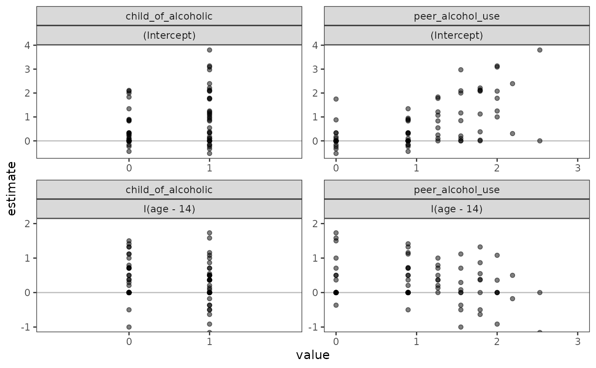
Finally, to inform specification of the level-2 submodel, we can look at coincident growth trajectories—which are simply the usual individual growth trajectories summarized by the number of individuals with the same trajectory—displayed separately for groups distinguished by important values of the time-invariant predictors.
Here we look at two time-invariant predictors,
child_of_alcoholic and peer_alcohol_use.
Because peer_alcohol_use is a continuous variable, we split
it at the sample mean for the purpose of display.
alcohol_use_1_pl <- alcohol_use_1_pl |>
mutate(
peer_alcohol_use_split = if_else(
peer_alcohol_use < mean(peer_alcohol_use),
true = "low",
false = "high"
),
peer_alcohol_use_split = factor(peer_alcohol_use_split, levels = c("low", "high"))
)
alcohol_use_1_pl
#> # A tibble: 82 × 8
#> id child_of_alcoholic male peer_alcohol_use alcohol_use_14 alcohol_use_15
#> <fct> <dbl> <dbl> <dbl> <dbl> <dbl>
#> 1 1 1 0 1.26 1.73 2
#> 2 2 1 1 0.894 0 0
#> 3 3 1 1 0.894 1 2
#> 4 4 1 1 1.79 0 2
#> 5 5 1 0 0.894 0 0
#> 6 6 1 1 1.55 3 3
#> 7 7 1 0 1.55 1.73 2.45
#> 8 8 1 1 0 0 0
#> 9 9 1 1 0 0 1
#> 10 10 1 0 2 1 1
#> # ℹ 72 more rows
#> # ℹ 2 more variables: alcohol_use_16 <dbl>, peer_alcohol_use_split <fct>To plot the coincident growth trajectories, we first need to summarize, for each predictor, the number of individuals with the same trajectory. The easiest way to do this is to count the number of groups with the same trajectory pattern for each level of the time-invariant predictors using the person-level data, then tidying the coincident trajectory summary back to a person-period format.
Afterwards we can plot as usual, with the addition of a
linewidth aesthetic for the coincident trajectory counts.
Note that this plot differs slightly from the text, as unlike Singer and
Willett (2003) we use the entire sample instead of a random sample.
alcohol_use_1_cotraj <- map(
list("child_of_alcoholic", "peer_alcohol_use_split"),
\(.x) {
# Wrangle
.coincident_trajectories <- alcohol_use_1_pl |>
group_by(.data[[.x]], pick(starts_with("alcohol_use"))) |>
summarise(coincident_trajectories = n(), .groups = "drop") |>
mutate(trajectory_id = 1:n(), .before = everything()) |>
pivot_longer(
cols = starts_with("alcohol_use"),
names_to = "age",
names_prefix = "alcohol_use_",
names_transform = as.integer,
values_to = "alcohol_use"
)
# Plot
ggplot(.coincident_trajectories, aes(x = age, y = alcohol_use)) +
stat_smooth(
aes(group = trajectory_id, linewidth = coincident_trajectories),
method = "lm",
se = FALSE
) +
scale_linewidth_continuous(limits = c(1, 22), range = c(.25, 4)) +
coord_cartesian(xlim = c(13, 17), ylim = c(0, 4)) +
facet_wrap(vars(.data[[.x]]), labeller = label_both)
}
)
# Figure 4.2, page 79:
wrap_plots(alcohol_use_1_cotraj, ncol = 1, guides = "collect")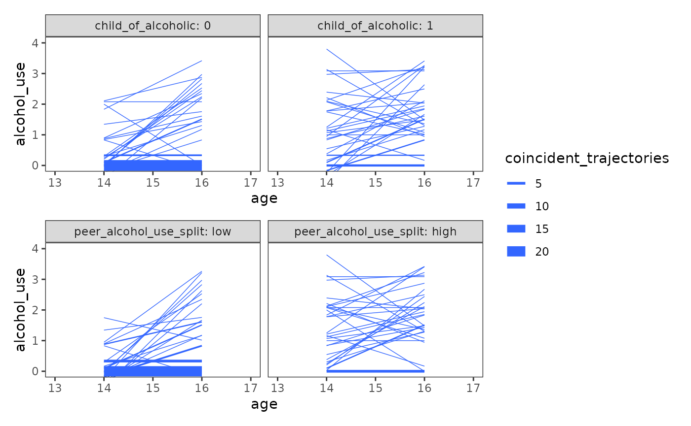
Based on the exploratory analyses, Singer and Willett (2003) posited
the following multilevel model for change for the
alcohol_use_1 data:
where the model parameters follow the same definitions and interpretations as discussed in Chapter 3.
4.2 The composite specification of the multilevel model for change
In Section 4.2 Singer and Willett (2003) introduce what they call the
composite multilevel model for change, which we
prematurely introduced in the Chapter 3 examples as the mixed model
specification. After substituting the level-2 equations into level-1,
our composite multilevel model for change for the
alcohol_use_1 data looks like:
4.3 Methods of estimation, revisited
In Section 4.3 Singer and Willett (2003) discuss two methods of estimation available to frequentist multilevel models, which must be selected before fitting the model:
-
Generalized least squares (GLS), which is an
extension of ordinary least-squares estimation that allows the residuals
to be autocorrelated and heteroscedastic. GLS estimates are obtained by
minimizing a weighted function of the residuals. The
gls()function from the nlme package can be used to fit the multilevel model for change using GLS. -
Maximum likelihood (ML), which is a more general
approach that is not limited to linear regression models. ML estimates
are obtained by maximizing a likelihood function so that, under
the assumed statistical model, the observed data is most probable. As we
have previously demonstrated, the
lmer()function from the lme4 package can be used to fit the multilevel model for change using ML.
Because generalized least squares and maximum likelihood estimation use different procedures to fit the multilevel model for change, their estimates may differ when fitting the same model using the same data; however, if the normal distribution assumptions required for maximum likelihood estimation hold, their estimates will be equivalent.
Additionally, maximum likelihood estimation can be further distinguished into two types: full and restricted. As Singer and Willett (2003) explain, under full maximum likelihood (FML) the likelihood of the sample data is maximized, and goodness-of-fit statistics refer to the fit of the entire model (fixed and random effects); under restricted maximum likelihood (REML) the likelihood of the sample residuals is maximized, and goodness-of-fit statistics refer to the fit of only the random effects. Consequently, statistical tests comparing the goodness-of-fit statistics from FML models can be used to test hypotheses about either fixed or random effect parameters, whereas those from REML models can be used only to test hypotheses about random effect parameters.
4.4 First steps: Fitting two unconditional multilevel models for change
In Section 4.4 Singer and Willett (2003) introduce a new model building workflow for the multilevel model for change that begins by fitting two unconditional multilevel models for change before including any substantive predictors:
- The unconditional means model, which partitions and quantifies the total variation in the outcome variable across individuals without regard to time. We fit this model first to determine whether the variance components and have sufficient variation within individuals (level 1) and between individuals (level 2), respectively, to warrant linking outcome variation at that level to predictors.
- The unconditional growth model, which partitions and quantifies variation in the outcome variable across both individuals and time. We fit this model second to determine whether interindividual differences in change are due to outcome variation in true initial status, , or true rate of change, .
Together, these two models (1) provide a valuable baseline against which you can evaluate and compare subsequent models that include substantive predictors, and (2) help establish whether and where any systematic variation in the outcome variable worth exploring resides.
The unconditional means model
The unconditional means model is an intercept-only model that allows the intercept to vary across individuals:
which postulates that the observed value of alcohol_use
for the
th
adolescent at the
th
time is composed of their within-person deviations,
,
from their person-specific true mean,
,
which in turn is composed of their between-person deviation,
,
from the population average true mean,
.
# Table 4.1, Model A, page 94-95:
model_A <- lmer(
alcohol_use ~ 1 + (1 | id),
data = alcohol_use_1,
REML = FALSE
)
summary(model_A)
#> Linear mixed model fit by maximum likelihood ['lmerMod']
#> Formula: alcohol_use ~ 1 + (1 | id)
#> Data: alcohol_use_1
#>
#> AIC BIC logLik deviance df.resid
#> 676.2 686.7 -335.1 670.2 243
#>
#> Scaled residuals:
#> Min 1Q Median 3Q Max
#> -1.8865 -0.3076 -0.3067 0.6137 2.8567
#>
#> Random effects:
#> Groups Name Variance Std.Dev.
#> id (Intercept) 0.5639 0.7509
#> Residual 0.5617 0.7495
#> Number of obs: 246, groups: id, 82
#>
#> Fixed effects:
#> Estimate Std. Error t value
#> (Intercept) 0.92195 0.09571 9.633Note that because the unconditional means model lacks any temporal predictors, it stipulates that the true change trajectory for each individual is completely flat over time, sitting at their person-specific mean (); and that the true population change trajectory is also flat, sitting at the grand mean ().
model_A |>
augment(data = alcohol_use_1) |>
ggplot(aes(x = age, y = .fitted)) +
geom_line(aes(linewidth = "individual", group = id), alpha = .35) +
geom_line(
aes(linewidth = "average"),
data = tibble(.fitted = fixef(model_A), age = measurement_occasions)
) +
scale_linewidth_manual(values = c(2, .25)) +
coord_cartesian(xlim = c(13, 17), ylim = c(0, 4)) +
labs(y = "alcohol_use", linewidth = "trajectory")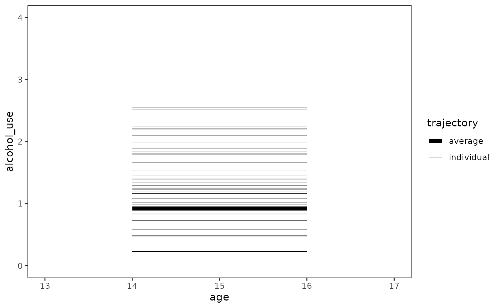
The unconditional growth model
The unconditional growth model introduces the time-indicator predictor into the model, and allows the rate of change to vary across individuals:
which postulates that the observed value of alcohol_use
for the
th
adolescent at the
th
time is composed of their within-person deviations,
,
from their true linear change trajectory—a linear function of their true
initial status,
,
and true rate of change,
—which
in turn are composed of their between-person deviations,
and
,
from the population average true initial status,
,
and the population average true rate of change,
,
respectively.
model_B <- lmer(
alcohol_use ~ I(age - 14) + (I(age - 14) | id),
data = alcohol_use_1,
REML = FALSE
)
summary(model_B)
#> Linear mixed model fit by maximum likelihood ['lmerMod']
#> Formula: alcohol_use ~ I(age - 14) + (I(age - 14) | id)
#> Data: alcohol_use_1
#>
#> AIC BIC logLik deviance df.resid
#> 648.6 669.6 -318.3 636.6 240
#>
#> Scaled residuals:
#> Min 1Q Median 3Q Max
#> -2.47999 -0.38401 -0.07553 0.39001 2.50685
#>
#> Random effects:
#> Groups Name Variance Std.Dev. Corr
#> id (Intercept) 0.6244 0.7902
#> I(age - 14) 0.1512 0.3888 -0.22
#> Residual 0.3373 0.5808
#> Number of obs: 246, groups: id, 82
#>
#> Fixed effects:
#> Estimate Std. Error t value
#> (Intercept) 0.65130 0.10508 6.198
#> I(age - 14) 0.27065 0.06245 4.334
#>
#> Correlation of Fixed Effects:
#> (Intr)
#> I(age - 14) -0.441This is the same model as Chapter 3’s individual growth model—but with a new name to emphasize that the model includes no substantive predictors—so we can plot the trajectories as usual.
model_B |>
augment() |>
select(-alcohol_use) |>
rename(alcohol_use = .fitted, age = `I(age - 14)`) |>
mutate(age = as.numeric(age + 14)) |>
ggplot(aes(x = age, y = alcohol_use)) +
geom_line(aes(linewidth = "individual", group = id), colour = "#3366FF") +
geom_line(
aes(linewidth = "average"),
data = tibble(
age = measurement_occasions,
alcohol_use = predict(
model_B,
tibble(age = measurement_occasions),
re.form = NA
)
),
colour = "#3366FF"
) +
scale_linewidth_manual(values = c(2, .25)) +
scale_x_continuous(breaks = 13:17) +
coord_cartesian(xlim = c(13, 17), ylim = c(0, 4)) +
labs(linewidth = "trajectory")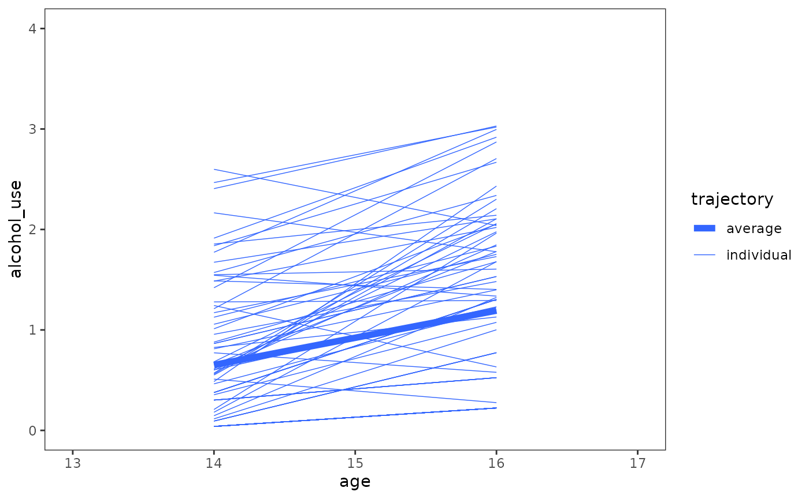
4.5 Practical data analytic strategies for model building
In Section 4.5 Singer and Willett (2003) present their data analytic strategy for model building, which focuses on building a systematic sequence of models that, as a set, address your research questions in a meaningful way. They refer to this sequence as a taxonomy of statistical models, where:
- Each model in the taxonomy extends a prior model in some sensible way.
- Decisions to enter, retain, and remove predictors are based on a combination of logic, theory, and prior research, supplemented by hypothesis testing and comparisons of model fit.
- The taxonomy progresses toward a “final” model whose interpretation addresses your research questions.
They present this strategy through one potential analytic path for
the alcohol_use_1 data, where the research question is
focused on the relationship between changes in adolescent alcohol use
and being the child of an alcoholic parent.
The first substantive model, Model C, updates the unconditional
growth model to include child_of_alcoholic as a predictor
of both initial status and rate of change. Singer and Willett (2003)
added these terms as a logical first step, given the research
question.
model_C <- update(
model_B,
. ~ . + child_of_alcoholic + I(age - 14):child_of_alcoholic
)
summary(model_C)
#> Linear mixed model fit by maximum likelihood ['lmerMod']
#> Formula: alcohol_use ~ I(age - 14) + (I(age - 14) | id) + child_of_alcoholic +
#> I(age - 14):child_of_alcoholic
#> Data: alcohol_use_1
#>
#> AIC BIC logLik deviance df.resid
#> 637.2 665.2 -310.6 621.2 238
#>
#> Scaled residuals:
#> Min 1Q Median 3Q Max
#> -2.5480 -0.3880 -0.1058 0.3602 2.3961
#>
#> Random effects:
#> Groups Name Variance Std.Dev. Corr
#> id (Intercept) 0.4876 0.6983
#> I(age - 14) 0.1506 0.3881 -0.22
#> Residual 0.3373 0.5808
#> Number of obs: 246, groups: id, 82
#>
#> Fixed effects:
#> Estimate Std. Error t value
#> (Intercept) 0.31595 0.13070 2.417
#> I(age - 14) 0.29296 0.08423 3.478
#> child_of_alcoholic 0.74321 0.19457 3.820
#> I(age - 14):child_of_alcoholic -0.04943 0.12539 -0.394
#>
#> Correlation of Fixed Effects:
#> (Intr) I(g-14) chld__
#> I(age - 14) -0.460
#> chld_f_lchl -0.672 0.309
#> I(-14):ch__ 0.309 -0.672 -0.460Model D builds upon Model C, controlling for the effects of
peer_alcohol_use on initial status and rate of change.
Singer and Willett (2003) added these terms to see if they might explain
some of the conditional residual variation in initial
status and rate of change from Model C.
model_D <- update(
model_C,
. ~ . + peer_alcohol_use + I(age - 14):peer_alcohol_use
)
summary(model_D)
#> Linear mixed model fit by maximum likelihood ['lmerMod']
#> Formula: alcohol_use ~ I(age - 14) + (I(age - 14) | id) + child_of_alcoholic +
#> peer_alcohol_use + I(age - 14):child_of_alcoholic + I(age -
#> 14):peer_alcohol_use
#> Data: alcohol_use_1
#>
#> AIC BIC logLik deviance df.resid
#> 608.7 643.7 -294.3 588.7 236
#>
#> Scaled residuals:
#> Min 1Q Median 3Q Max
#> -2.59554 -0.40005 -0.07769 0.46003 2.29373
#>
#> Random effects:
#> Groups Name Variance Std.Dev. Corr
#> id (Intercept) 0.2409 0.4908
#> I(age - 14) 0.1391 0.3730 -0.03
#> Residual 0.3373 0.5808
#> Number of obs: 246, groups: id, 82
#>
#> Fixed effects:
#> Estimate Std. Error t value
#> (Intercept) -0.31651 0.14806 -2.138
#> I(age - 14) 0.42943 0.11369 3.777
#> child_of_alcoholic 0.57917 0.16249 3.564
#> peer_alcohol_use 0.69430 0.11153 6.225
#> I(age - 14):child_of_alcoholic -0.01403 0.12477 -0.112
#> I(age - 14):peer_alcohol_use -0.14982 0.08564 -1.749
#>
#> Correlation of Fixed Effects:
#> (Intr) I(g-14) chld__ pr_lc_ I(-14):c__
#> I(age - 14) -0.436
#> chld_f_lchl -0.371 0.162
#> peer_lchl_s -0.686 0.299 -0.162
#> I(-14):ch__ 0.162 -0.371 -0.436 0.071
#> I(-14):pr__ 0.299 -0.686 0.071 -0.436 -0.162Model E reduces Model D, removing child_of_alcoholic as
a predictor of rate of change. Singer and Willett (2003) removed this
term based on the results of Models C and D, which both estimated that
the difference in the rate of change in alcohol_use between
children of alchoholic and nonalcoholic parents was practically
zero.
model_E <- update(
model_D,
. ~ . - I(age - 14):child_of_alcoholic
)
summary(model_E)
#> Linear mixed model fit by maximum likelihood ['lmerMod']
#> Formula: alcohol_use ~ I(age - 14) + (I(age - 14) | id) + child_of_alcoholic +
#> peer_alcohol_use + I(age - 14):peer_alcohol_use
#> Data: alcohol_use_1
#>
#> AIC BIC logLik deviance df.resid
#> 606.7 638.3 -294.4 588.7 237
#>
#> Scaled residuals:
#> Min 1Q Median 3Q Max
#> -2.59554 -0.40414 -0.08352 0.45550 2.29975
#>
#> Random effects:
#> Groups Name Variance Std.Dev. Corr
#> id (Intercept) 0.2409 0.4908
#> I(age - 14) 0.1392 0.3730 -0.03
#> Residual 0.3373 0.5808
#> Number of obs: 246, groups: id, 82
#>
#> Fixed effects:
#> Estimate Std. Error t value
#> (Intercept) -0.31382 0.14611 -2.148
#> I(age - 14) 0.42469 0.10559 4.022
#> child_of_alcoholic 0.57120 0.14623 3.906
#> peer_alcohol_use 0.69518 0.11126 6.249
#> I(age - 14):peer_alcohol_use -0.15138 0.08451 -1.791
#>
#> Correlation of Fixed Effects:
#> (Intr) I(g-14) chld__ pr_lc_
#> I(age - 14) -0.410
#> chld_f_lchl -0.338 0.000
#> peer_lchl_s -0.709 0.351 -0.146
#> I(-14):pr__ 0.334 -0.814 0.000 -0.431Model F serves as an alternative to Model E, with
peer_alcohol_use centred on its sample mean of 1.018 (from
the person-level data set). Singer and Willett (2003) centred
peer_alcohol_use so that the level-2 intercepts,
and
,
would represent a child of non-alchoholic parents with an average value
of peer_alcohol_use (peer_alcohol_use = 1.018
and child_of_alcoholic = 0), rather than a child of
non-alchoholic parents whose peers at age 14 were totally abstinent
(peer_alcohol_use = 0 and child_of_alcoholic =
0).
model_F <- update(
model_E,
data = mutate(alcohol_use_1, peer_alcohol_use = peer_alcohol_use - 1.018)
)
summary(model_F)
#> Linear mixed model fit by maximum likelihood ['lmerMod']
#> Formula: alcohol_use ~ I(age - 14) + (I(age - 14) | id) + child_of_alcoholic +
#> peer_alcohol_use + I(age - 14):peer_alcohol_use
#> Data: mutate(alcohol_use_1, peer_alcohol_use = peer_alcohol_use - 1.018)
#>
#> AIC BIC logLik deviance df.resid
#> 606.7 638.3 -294.4 588.7 237
#>
#> Scaled residuals:
#> Min 1Q Median 3Q Max
#> -2.59554 -0.40414 -0.08352 0.45550 2.29975
#>
#> Random effects:
#> Groups Name Variance Std.Dev. Corr
#> id (Intercept) 0.2409 0.4908
#> I(age - 14) 0.1392 0.3730 -0.03
#> Residual 0.3373 0.5808
#> Number of obs: 246, groups: id, 82
#>
#> Fixed effects:
#> Estimate Std. Error t value
#> (Intercept) 0.39387 0.10354 3.804
#> I(age - 14) 0.27058 0.06127 4.416
#> child_of_alcoholic 0.57120 0.14623 3.906
#> peer_alcohol_use 0.69518 0.11126 6.249
#> I(age - 14):peer_alcohol_use -0.15138 0.08451 -1.791
#>
#> Correlation of Fixed Effects:
#> (Intr) I(g-14) chld__ pr_lc_
#> I(age - 14) -0.336
#> chld_f_lchl -0.637 0.000
#> peer_lchl_s 0.094 0.000 -0.146
#> I(-14):pr__ 0.000 0.001 0.000 -0.431Finally, Model G serves as an alternative to Model F, with
child_of_alcoholic also centred on its sample mean of 0.451
(from the person-level data set). Singer and Willett (2003)
also centred child_of_alcoholic so that the level-2
intercepts,
and
,
would represent an adolescent with average values of
peer_alcohol_use and child_of_alcoholic
(peer_alcohol_use = 1.018 and
child_of_alcoholic = 0.451), and be numerically identical
to the corresponding level-2 intercepts in the unconditional growth
model.
model_G <- update(
model_F,
data = mutate(
alcohol_use_1,
peer_alcohol_use = peer_alcohol_use - 1.018,
child_of_alcoholic = child_of_alcoholic - 0.451
)
)
summary(model_G)
#> Linear mixed model fit by maximum likelihood ['lmerMod']
#> Formula: alcohol_use ~ I(age - 14) + (I(age - 14) | id) + child_of_alcoholic +
#> peer_alcohol_use + I(age - 14):peer_alcohol_use
#> Data: mutate(alcohol_use_1, peer_alcohol_use = peer_alcohol_use - 1.018,
#> child_of_alcoholic = child_of_alcoholic - 0.451)
#>
#> AIC BIC logLik deviance df.resid
#> 606.7 638.3 -294.4 588.7 237
#>
#> Scaled residuals:
#> Min 1Q Median 3Q Max
#> -2.59554 -0.40414 -0.08352 0.45550 2.29975
#>
#> Random effects:
#> Groups Name Variance Std.Dev. Corr
#> id (Intercept) 0.2409 0.4908
#> I(age - 14) 0.1392 0.3730 -0.03
#> Residual 0.3373 0.5808
#> Number of obs: 246, groups: id, 82
#>
#> Fixed effects:
#> Estimate Std. Error t value
#> (Intercept) 0.65148 0.07979 8.165
#> I(age - 14) 0.27058 0.06127 4.416
#> child_of_alcoholic 0.57120 0.14623 3.906
#> peer_alcohol_use 0.69518 0.11126 6.249
#> I(age - 14):peer_alcohol_use -0.15138 0.08451 -1.791
#>
#> Correlation of Fixed Effects:
#> (Intr) I(g-14) chld__ pr_lc_
#> I(age - 14) -0.436
#> chld_f_lchl 0.000 0.000
#> peer_lchl_s 0.001 0.000 -0.146
#> I(-14):pr__ 0.000 0.001 0.000 -0.431To make our taxonomy of statistical models easier to work with in subsequent sections, we will store the models in a list.
alcohol_use_1_fits <- list(
`Model A` = model_A,
`Model B` = model_B,
`Model C` = model_C,
`Model D` = model_D,
`Model E` = model_E,
`Model F` = model_F,
`Model G` = model_G
)Inspecting model summary and goodness-of-fit statistics
In addition to the output from summary() we can return a
one row tibble of model summary and goodness-of-fit statistics using the
glance() function from the broom.mixed package. Individual
statistics can also be returned using the generic functions of the
corresponding name (e.g., AIC(), BIC(),
deviance(), etc.).
glance(model_A)
#> # A tibble: 1 × 7
#> nobs sigma logLik AIC BIC deviance df.residual
#> <int> <dbl> <dbl> <dbl> <dbl> <dbl> <int>
#> 1 246 0.749 -335. 676. 687. 670. 243Singer and Willett (2003) also introduce three pseudo- statistics for the multilevel model for change, which can be used to cautiously quantify how much outcome variation is “explained” by a model’s predictors.
The first statistic, , assesses the proportion of total outcome variation “explained” by a model’s specific combination of predictors, based on the squared sample correlation between observed and predicted values.
r2_yy <- alcohol_use_1_fits |>
map(
\(.fit) {
.fit |>
augment() |>
summarise(
r2_yy = cor(alcohol_use, .fixed)^2
)
}
) |>
list_rbind(names_to = "model")The second statistic,
,
assesses the proportion of within-person variation “explained” by time,
based on the proportional decrease in within-person residual variance
between the unconditional means model and subsequent models. Note that
because the only way of reducing this variance component is to add
time-varying predictors to the level-1 submodel, this statistic is the
same for all of the models we fit to the alcohol_use_1
data.
r2_e <- alcohol_use_1_fits[2:7] |>
map(
\(.fit) {
.fit |>
augment() |>
summarise(
r2_e = (sigma(model_A)^2 - sigma(.fit)^2) / sigma(model_A)^2
)
}
) |>
list_rbind(names_to = "model")The final statistic, , assesses the proportion of between-person variation “explained” by one or more level-2 predictors, based on the proportional decrease in level-2 residual variance between the unconditional growth model and subsequent models for each level-2 residual variance component.
r2_z <- alcohol_use_1_fits[3:7] |>
map(
\(.fit) {
zeta <- map(
list(x = model_B, y = .fit),
\(.fit2) {
.fit2 |>
tidy(effects = "ran_pars", scales = "vcov") |>
filter(group != "Residual" & stringr::str_detect(term, "^var"))
}
)
zeta$x |>
left_join(zeta$y, by = c("effect", "group", "term")) |>
mutate(
r2 = (estimate.x - estimate.y) / estimate.x,
name = c("r2_z1", "r2_z2")
) |>
select(name, r2) |>
pivot_wider(names_from = name, values_from = r2)
}
) |>
list_rbind(names_to = "model")Because we will be adding these statistics to a table in the next section, we will join them together here.
alcohol_use_1_fits_r2 <- r2_yy |>
left_join(r2_e) |>
left_join(r2_z)
alcohol_use_1_fits_r2
#> # A tibble: 7 × 5
#> model r2_yy r2_e r2_z1 r2_z2
#> <chr> <dbl> <dbl> <dbl> <dbl>
#> 1 Model A NA NA NA NA
#> 2 Model B 0.0434 0.400 NA NA
#> 3 Model C 0.150 0.400 0.219 0.00401
#> 4 Model D 0.291 0.400 0.614 0.0799
#> 5 Model E 0.291 0.400 0.614 0.0797
#> 6 Model F 0.291 0.400 0.614 0.0797
#> 7 Model G 0.291 0.400 0.614 0.0797Interpreting fitted models
To systematically compare fitted models—describing what happens as
predictors are added and removed—Singer and Willett (2003) suggest
placing them side-by-side in a table, which allows you to more easily
inspect and compare estimated fixed effects, variance components, and
goodness-of-fit statistics from one model to the next. We can construct
such a table using the modelsummary() function from the
modelsummary package. To better match the table in the
text, we will set the table output to "gt" so
we can post-process it using the gt package.
# This option needs to be set in order to make all the desired goodness-of-fit
# statistics available to modelsummary.
options(modelsummary_get = "all")
# Table 4.1, page 94-95:
alcohol_use_1_fits |>
modelsummary(
shape = term + effect + statistic ~ model,
scales = c("vcov", NA), # argument from broom.mixed::tidy()
coef_map = c(
"(Intercept)",
"child_of_alcoholic",
"peer_alcohol_use",
"I(age - 14)",
"I(age - 14):child_of_alcoholic",
"I(age - 14):peer_alcohol_use",
"var__Observation",
"var__(Intercept)",
"var__I(age - 14)",
"cov__(Intercept).I(age - 14)"
),
gof_map = tibble(
raw = c("deviance", "AIC", "BIC"),
clean = c("Deviance", "AIC", "BIC"),
fmt = 2
),
# The R2s need to be transposed to be added to the table columns. Their
# position in the table is set by the `position` attribute.
add_rows = alcohol_use_1_fits_r2 |>
pivot_longer(-model, names_to = "estimate") |>
pivot_wider(names_from = model) |>
mutate(effect = "", .after = estimate) |>
structure(position = 17:21),
output = "gt"
) |>
tab_row_group(label = "Goodness-of-Fit", rows = 17:23) |>
tab_row_group(label = "Variance Components", rows = 13:16) |>
tab_row_group(label = "Fixed Effects", rows = 1:12) |>
cols_hide(effect)| Model A | Model B | Model C | Model D | Model E | Model F | Model G | |
|---|---|---|---|---|---|---|---|
| Fixed Effects | |||||||
| (Intercept) | 0.922 | 0.651 | 0.316 | -0.317 | -0.314 | 0.394 | 0.651 |
| (0.096) | (0.105) | (0.131) | (0.148) | (0.146) | (0.104) | (0.080) | |
| child_of_alcoholic | 0.743 | 0.579 | 0.571 | 0.571 | 0.571 | ||
| (0.195) | (0.162) | (0.146) | (0.146) | (0.146) | |||
| peer_alcohol_use | 0.694 | 0.695 | 0.695 | 0.695 | |||
| (0.112) | (0.111) | (0.111) | (0.111) | ||||
| I(age - 14) | 0.271 | 0.293 | 0.429 | 0.425 | 0.271 | 0.271 | |
| (0.062) | (0.084) | (0.114) | (0.106) | (0.061) | (0.061) | ||
| I(age - 14):child_of_alcoholic | -0.049 | -0.014 | |||||
| (0.125) | (0.125) | ||||||
| I(age - 14):peer_alcohol_use | -0.150 | -0.151 | -0.151 | -0.151 | |||
| (0.086) | (0.085) | (0.085) | (0.085) | ||||
| Variance Components | |||||||
| var__Observation | 0.562 | 0.337 | 0.337 | 0.337 | 0.337 | 0.337 | 0.337 |
| var__(Intercept) | 0.564 | 0.624 | 0.488 | 0.241 | 0.241 | 0.241 | 0.241 |
| var__I(age - 14) | 0.151 | 0.151 | 0.139 | 0.139 | 0.139 | 0.139 | |
| cov__(Intercept).I(age - 14) | -0.068 | -0.059 | -0.006 | -0.006 | -0.006 | -0.006 | |
| Goodness-of-Fit | |||||||
| r2_yy | 0.043 | 0.150 | 0.291 | 0.291 | 0.291 | 0.291 | |
| r2_e | 0.400 | 0.400 | 0.400 | 0.400 | 0.400 | 0.400 | |
| r2_z1 | 0.219 | 0.614 | 0.614 | 0.614 | 0.614 | ||
| r2_z2 | 0.004 | 0.080 | 0.080 | 0.080 | 0.080 | ||
| Deviance | 670.16 | 636.61 | 621.20 | 588.69 | 588.70 | 588.70 | 588.70 |
| AIC | 676.16 | 648.61 | 637.20 | 608.69 | 606.70 | 606.70 | 606.70 |
| BIC | 686.67 | 669.64 | 665.25 | 643.74 | 638.25 | 638.25 | 638.25 |
Displaying prototypical change trajectories
In addition to numerical summaries, Singer and Willett (2003) suggest plotting fitted trajectories for prototypical individuals to describe the results of model fitting, with prototypical values of predictors selected using one or more of the following strategies:
- Choosing substantively interesting values, for categorical or continuous predictors with well-known values.
- Using a range of percentiles, for continuous predictors without well-known values.
- Using standard deviations from the sample mean, for continuous predictors without well-known values.
- Using the sample mean, for categorical or continuous predictors you want to control for.
After selecting prototypical values of the predictors, prototypical change trajectories can be derived from combinations of these values using the usual model predictions.
For convenience, we can use the estimate_prediction()
function from the modelbased package to make these
predictions, and the map2() function from the
purrr package to iterate over the desired model and
prototypical value combinations. Here we will look at prototypical
change trajectories for Models B, C, and E.
prototypical_alcohol_use <- alcohol_use_1_fits |>
keep_at(paste0("Model ", c("B", "C", "E"))) |>
map2(
list(
tibble(age = 14:16),
crossing(age = 14:16, child_of_alcoholic = 0:1),
crossing(
age = 14:16, child_of_alcoholic = 0:1, peer_alcohol_use = c(0.655, 1.381)
)
),
\(.fit, .data) {
.fit |>
estimate_prediction(data = .data) |>
rename(alcohol_use = Predicted) |>
as_tibble()
}
) |>
list_rbind(names_to = "model") |>
mutate(
child_of_alcoholic = factor(child_of_alcoholic),
peer_alcohol_use = factor(peer_alcohol_use, labels = c("low", "high"))
)
prototypical_alcohol_use
#> # A tibble: 21 × 8
#> model age alcohol_use SE CI_low CI_high child_of_alcoholic
#> <chr> <int> <dbl> <dbl> <dbl> <dbl> <fct>
#> 1 Model B 14 0.651 0.590 -0.511 1.81 NA
#> 2 Model B 15 0.922 0.589 -0.238 2.08 NA
#> 3 Model B 16 1.19 0.594 0.0233 2.36 NA
#> 4 Model C 14 0.316 0.595 -0.857 1.49 0
#> 5 Model C 14 1.06 0.598 -0.120 2.24 1
#> 6 Model C 15 0.609 0.593 -0.559 1.78 0
#> 7 Model C 15 1.30 0.595 0.130 2.48 1
#> 8 Model C 16 0.902 0.602 -0.284 2.09 0
#> 9 Model C 16 1.55 0.607 0.351 2.74 1
#> 10 Model E 14 0.142 0.591 -1.02 1.31 0
#> # ℹ 11 more rows
#> # ℹ 1 more variable: peer_alcohol_use <fct>To systematically compare the prototypical change trajectories, it
can be helpful to plot them side-by-side. However, because certain
predictors are present in some models but not others, we need to supply
an na.value to each of the scale_() functions
to ensure a trajectory appears in panels where those predictors are not
present.
# Figure 4.3, page 99:
prototypical_alcohol_use |>
ggplot(aes(x = age, y = alcohol_use)) +
geom_line(aes(linetype = child_of_alcoholic, colour = peer_alcohol_use)) +
scale_linetype_manual(values = c(2, 6), na.value = 1) +
scale_color_viridis_d(
option = "G", begin = .4, end = .7, na.value = "black"
) +
scale_x_continuous(breaks = 13:17) +
coord_cartesian(xlim = c(13, 17), ylim = c(0, 2)) +
facet_wrap(vars(model))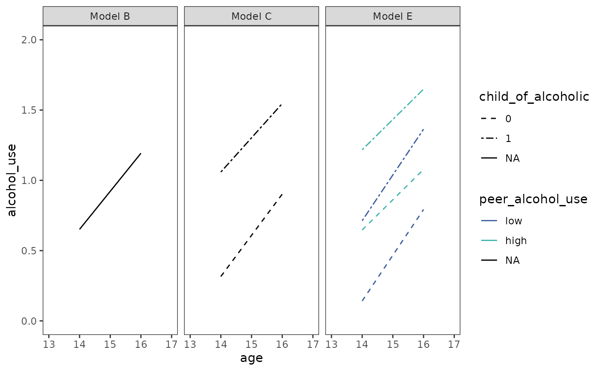
Note that depending on the number of predictors across different models, it may be preferable to instead create separate plots (which could be later added together using the patchwork package).
4.6 Comparing models using deviance statistics
In Section 4.6 Singer and Willett (2003) introduce the deviance statistic, which quantifies how much worse the current model fit is in comparison to a saturated model that fits the observed data perfectly by comparing log-likelihood statistics for the two models:
Note that for the multilevel model for change this equation reduces to:
because the the log-likelihood statistic for the saturated model is always zero.
Deviance statistics from nested models estimated
using identical data can be compared using the anova()
function, which computes analysis of deviance tables for one or more
fitted models. Unfortunately anova() doesn’t accept a list
as input, so we have to do some meta-programming to use our list of
models if we don’t want to type out each model by hand.
with(
alcohol_use_1_fits[1:5],
do.call(anova, map(names(alcohol_use_1_fits[1:5]), as.name))
)
#> Data: alcohol_use_1
#> Models:
#> Model A: alcohol_use ~ 1 + (1 | id)
#> Model B: alcohol_use ~ I(age - 14) + (I(age - 14) | id)
#> Model C: alcohol_use ~ I(age - 14) + (I(age - 14) | id) + child_of_alcoholic + I(age - 14):child_of_alcoholic
#> Model E: alcohol_use ~ I(age - 14) + (I(age - 14) | id) + child_of_alcoholic + peer_alcohol_use + I(age - 14):peer_alcohol_use
#> Model D: alcohol_use ~ I(age - 14) + (I(age - 14) | id) + child_of_alcoholic + peer_alcohol_use + I(age - 14):child_of_alcoholic + I(age - 14):peer_alcohol_use
#> npar AIC BIC logLik deviance Chisq Df Pr(>Chisq)
#> Model A 3 676.16 686.67 -335.08 670.16
#> Model B 6 648.61 669.64 -318.31 636.61 33.5449 3 2.472e-07 ***
#> Model C 8 637.20 665.25 -310.60 621.20 15.4085 2 0.0004509 ***
#> Model E 9 606.70 638.25 -294.35 588.70 32.4993 1 1.192e-08 ***
#> Model D 10 608.69 643.74 -294.35 588.69 0.0126 1 0.9104569
#> ---
#> Signif. codes: 0 '***' 0.001 '**' 0.01 '*' 0.05 '.' 0.1 ' ' 1Note that by default the anova() function will refit
objects of class merMod with FML before comparing models if
they have been estimated with REML to prevent the common mistake of
inappropriately comparing REML-fitted models with different fixed
effects, whose likelihoods are not directly comparable. For REML-fitted
models with identical fixed effects and different random effects, the
refit argument can be set to FALSE to directly
compare the REML-fitted models.
4.7 Using Wald statistics to test composite hypotheses about fixed effects
This section is intentionally left blank.
4.8 Evaluating the tenability of a model’s assumptions
In Section 4.8 Singer and Willett (2003) offer strategies for checking the following assumptions of the multilevel model for change:
- The linear (or nonlinear) functional form of the hypothesized individual change trajectory seems reasonable for the observed data—there do not appear to be systematic deviations from linearity (or nonlinearity) across participants.
- The level-1 and level-2 residuals are all normally distributed.
- The level-1 and level-2 residuals have equal variances at each level of every predictor.
Checking functional Form
The functional form assumption of the multilevel model for change can be assessed by inspecting “outcome versus predictors” plots at each level.
At level-1, empirical growth plots with superimposed individual change trajectories should support the suitability of specified functional form. Empirical growth plots should be examined for each individual (or several subsamples of individuals), looking for systematic deviations that disconfirm the suitability of the hypothesized individual change trajectory.
set.seed(333)
alcohol_use_1 |>
filter(id %in% sample(unique(id), size = 16)) |>
ggplot(aes(x = age, y = alcohol_use)) +
stat_smooth(method = "lm", se = FALSE) +
geom_point() +
coord_cartesian(xlim = c(13, 17), ylim = c(0, 4)) +
facet_wrap(vars(id), ncol = 4, labeller = label_both)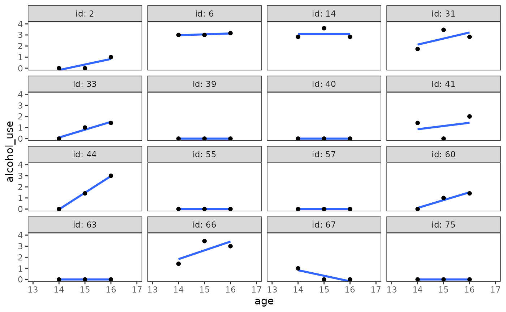
At level-2, OLS-estimated individual growth parameters should be plotted against each substantive predictor to confirm the suitability of the specified level-2 relationships. For linear models, only continuous predictors need to be assessed because categorical predictors are always linear.
alcohol_use_1_fit_np <- lmList(
alcohol_use ~ I(age - 14) | id,
pool = FALSE,
data = alcohol_use_1
)
alcohol_use_1_est_np <- alcohol_use_1_fit_np |>
map(tidy) |>
list_rbind(names_to = "id") |>
select(id:estimate, alcohol_use = estimate) |>
left_join(alcohol_use_1_pl) |>
mutate(child_of_alcoholic = factor(child_of_alcoholic))
alcohol_use_1_ovp <- map(
list("child_of_alcoholic", "peer_alcohol_use"),
\(.x) {
ggplot(alcohol_use_1_est_np, aes(x = .data[[.x]], y = alcohol_use)) +
geom_hline(yintercept = 0, alpha = .25) +
geom_point() +
facet_wrap(vars(term), ncol = 1, scales = "free_y")
}
)
# Figure 4.4:
wrap_plots(alcohol_use_1_ovp) +
plot_layout(axes = "collect")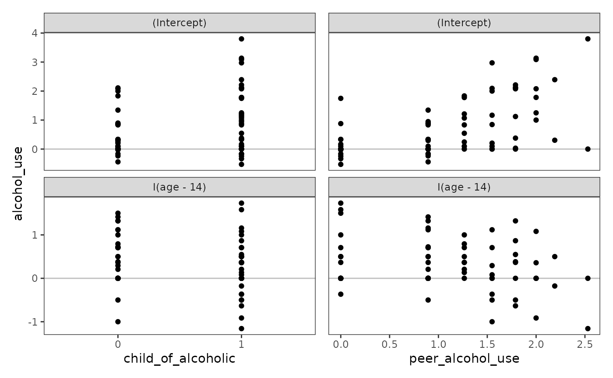
Checking normality
The normality assumption of the multilevel model for change can be
assessed by inspecting Q-Q plots of the level-1 and level-2 residuals,
and also (optionally) with statistical tests of normality. The
check_normality() function from the
performance package can perform both of these
tasks.
model_F_normality <- map(
set_names(c("fixed", "random")),
\(.x) check_normality(model_F, effects = .x)
)
model_F_normality
#> $fixed
#> Warning: Non-normality of residuals detected (p = 0.011).
#>
#> $random
#> OK: Random effects 'id: (Intercept)' appear as normally distributed (p = 0.270).
#> Warning: Non-normality for random effects 'id: I(age - 14)' detected (p < .001).The plot() method for check_normality() can
be used to return Q-Q plots of the level-1 and level-2 residuals.
# Figure 4.5 (left panels), page 131:
plot(model_F_normality$fixed, detrend = FALSE) +
plot(model_F_normality$random) +
plot_layout(widths = c(1/3, 2/3)) &
theme_bw() &
theme(panel.grid = element_blank())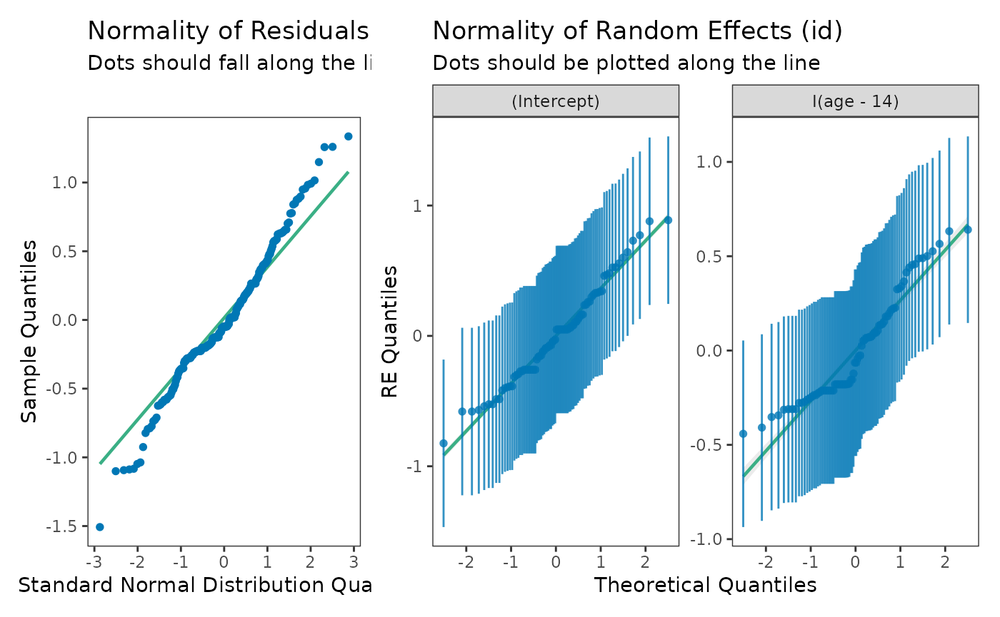
Checking homoscedasticity
The homoscedasticity assumption of the multilevel model for change can be assessed by inspecting “residual versus predictors” plots at each level to see if residual variability is approximately equal at every predictor value.
The level-1 residuals should be plotted against the level-1 predictor.
# Figure 4.6 (top panel), page 133:
model_F |>
augment(re.form = NA) |>
rename(age = `I(age - 14)`) |>
mutate(age = as.numeric(age + 14)) |>
ggplot(aes(x = age, y = .resid)) +
geom_hline(yintercept = 0, alpha = .25) +
geom_point() +
coord_cartesian(xlim = c(13, 17), ylim = c(-2, 2))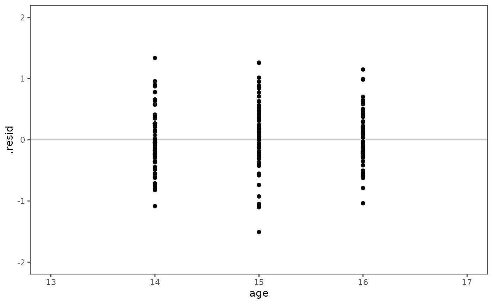
The level-2 residuals should be plotted against the level-2 predictor(s).
alcohol_use_1_ranef <- model_F |>
ranef() |>
augment() |>
as_tibble() |>
rename(term = variable, id = level, .resid = estimate) |>
left_join(alcohol_use_1_pl) |>
mutate(child_of_alcoholic = factor(child_of_alcoholic))
alcohol_use_1_rvp <- map(
list("child_of_alcoholic", "peer_alcohol_use"),
\(.x) {
ggplot(alcohol_use_1_ranef, aes(x = .data[[.x]], y = .resid)) +
geom_hline(yintercept = 0, alpha = .25) +
geom_point() +
facet_wrap(vars(term), ncol = 1, scales = "free_y") +
coord_cartesian(ylim = c(-1, 1))
}
)
# Figure 4.6 (bottom panels), page 133:
wrap_plots(alcohol_use_1_rvp) + plot_layout(axes = "collect")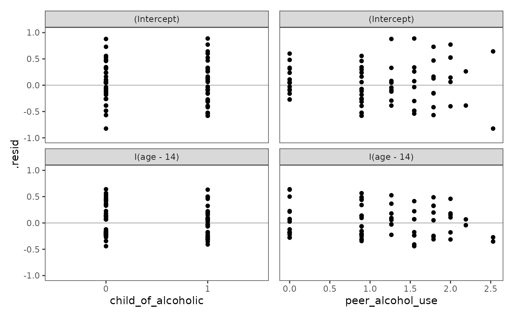
4.9 Model-based estimates of the individual growth parameters
In Section 4.9 Singer and Willett (2003) discuss how to use model-based estimates to display individual growth trajectories, which are simply the partial pooling trajectories we previously discussed in Chapter 3.
We begin by predicting three types of growth trajectories for each individual: (1) A no pooling trajectory estimated from separate linear models; (2) a population average trajectory estimated from the multilevel model for change, which does not condition on the random effects; and (3) a model-based trajectory estimated from the multilevel model for change, which does condition on the random effects.
alcohol_use_1_np_pred <- alcohol_use_1_fit_np |>
map(augment) |>
list_rbind(names_to = "id") |>
mutate(trajectory = "no_pooling")
alcohol_use_1_pp_pred <- list(population_average = NA, model_based = NULL) |>
map(\(.x) augment(model_F, re.form = .x)) |>
list_rbind(names_to = "trajectory")
# For display purposes we will tidy up the prediction data frames and only use
# a subset of participants.
alcohol_use_1_preds <- alcohol_use_1_np_pred |>
bind_rows(alcohol_use_1_pp_pred) |>
filter(id %in% c(4, 14, 23, 32, 41, 56, 65, 82)) |>
rename(age = `I(age - 14)`) |>
mutate(
trajectory = factor(
trajectory, levels = c("population_average", "no_pooling", "model_based")
),
id = factor(id, levels = sort(as.numeric(unique(id)))),
age = as.numeric(age + 14),
) |>
select(trajectory, id, age, alcohol_use, .fitted)
alcohol_use_1_preds
#> # A tibble: 72 × 5
#> trajectory id age alcohol_use .fitted
#> <fct> <fct> <dbl> <dbl> <dbl>
#> 1 no_pooling 4 14 0 0.378
#> 2 no_pooling 4 15 2 1.24
#> 3 no_pooling 4 16 1.73 2.11
#> 4 no_pooling 14 14 2.83 3.09
#> 5 no_pooling 14 15 3.61 3.09
#> 6 no_pooling 14 16 2.83 3.09
#> 7 no_pooling 23 14 1 0.878
#> 8 no_pooling 23 15 1 1.24
#> 9 no_pooling 23 16 1.73 1.61
#> 10 no_pooling 32 14 1.73 1.75
#> # ℹ 62 more rowsNow we can plot the three trajectories.
# Figure 4.7:
ggplot(alcohol_use_1_preds, aes(x = age)) +
geom_point(aes(y = alcohol_use)) +
geom_line(aes(y = .fitted, colour = trajectory)) +
scale_colour_brewer(palette = "Dark2") +
scale_y_continuous(breaks = 0:4) +
coord_cartesian(xlim = c(13, 17), ylim = c(-1, 4)) +
facet_wrap(vars(id), nrow = 2, labeller = label_both)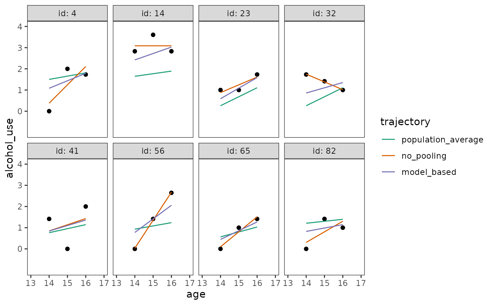
Similar to our partial pooling example in in Chapter 3, notice that:
- The population average trajectories are the most stable, varying the least across individuals.
- The no pooling trajectories are the least stable, varying the most across individuals.
- The model-based trajectories fall somewhere between the population average and no pooling trajectories, due to the effects of partial pooling.
Although we will typically prefer model-based trajectories from the multilevel model for change, Singer and Willett (2003) conclude by cautioning that the model-based trajectories of a flawed model will be flawed as well—as their quality depends heavily on the quality of the model fit and the soundness of the model’s assumptions (given the data).